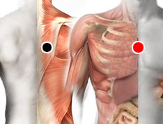

Sufrimiento fetal
Par
cava - timo

Generalidades:
Sufrimiento fetal se debe a un intercambio deficiente de oxígeno entre la madre y el feto, puede darse desde el tercer mes del embarazo o en el momento del parto.
El par se aplica al bebé o niño para ayudar a sanar las secuelas derivadas del sufrimiento fetal.
Causas:
Las causas pueden deberse a trastornos en el organismo de la madre como hipo o hipertensión arterial, hipoxia (falta de oxígeno), acidosis, diabetes, tabaquismo, alcoholismo. También pueden deberse a fallas en el funcionamiento de la placenta y/o el cordón umbilical (compresión). Por el lado del feto puede presentarse una anemia hemolítica fetal debida a incompatibilidad con el Rh, o por infecciones (sepsis) u otros agentes.
También un tumor o malformación del útero puede entorpecer el flujo de la sangre al feto, situación que se puede evidenciar desde el tercer mes de embarazo.
Señales:
Las principales señales que permiten al médico identificar esta condición:
Consecuencias:
Las consecuencias para el bebé pueden ser: